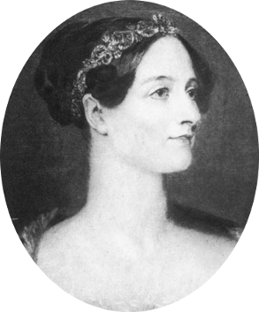

Ada Augusta King, Countess of Lovelace, currently known as Ada Lovelace, was an English mathematician and writer. She is chiefly known to be the first programmer of the history. Is she the first woman programmer? No, she is the first person to build a computer algorithm.
Ada was born in 10 December 1815, in London, England. She learned math and logical with her mother, Anne Isabella. In her youth, she started to work with the mathematician Charles Babbage. He was building an analytical engine. In 1842, she translated the paper about the machine for Babbage and she added her own notes. They were larger than the paper itself. Among the notes, she wrote the first program of the history: an algorithm to calculate the Bernoulli sequence.
Ada was 36 years old when she died, of cervical cancer. More than one hundred later, the machine was recognize as a first computer model and the Ada notes was recognized as the computer description and a software. At that time, Ada was cited in the work of the mathematician Alan Turing. In 1979, the United States Department of Defense created the programming language Ada, in her honor.